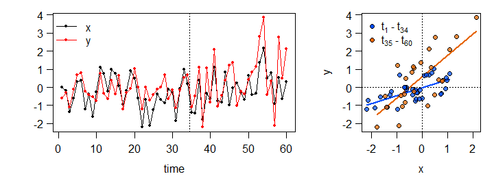
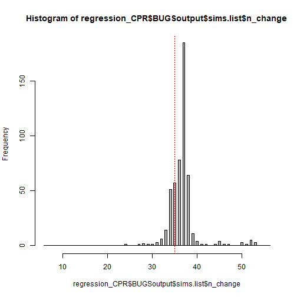

Change Point Regression
This implementation of change point regression was developed by Julian Stander (University of Plymouth) and first published in Eichenseer et al. (2019).
Assume we want to investigate the relationship between two variables, let’s say $x$ and $y$, that we have collected over a certain period of time. We have reason to believe that the relationship changed at some point, but we don’t know when.
Let’s generate $x$ and $y$ and plot them. $y$ is linearly dependent on $x$ across the whole time series, but we induce an increase in the intercept, slope and residual variance at the $35^{th}$ observation:

The regression model
Now we build a model that can recover the change point and the linear relationship between $x$ and $y$ before and after the change point.
The first part of this model looks like an ordinary least squares regression of $y$ against $x$:
$\begin{aligned} \begin{equation} \begin{array}{l}
y_i \sim N(\mu_i, \sigma_1^2), \
\mu_i = \alpha_1~+~\beta_1~x_i, ~~~~~ i = 1,…,n_{change}-1 \end{array}
\end{equation} \end{aligned}$
Here we have a single intercept ($\alpha_1$), slope ($\beta_1$), and residual variance ($\sigma^2_1$). $n_{change}$ - 1 denotes the number of obervations before the change point.
From the change point $n_{change}$ onwards, we add an additional intercept, $\alpha_2$, to the intercept from the first part ($\alpha_1$). We do the same for the slope and the residual variance:
$\begin{aligned} \begin{equation} \begin{array}{l}
y_i \sim N(\mu_i, \sigma_1^2+\sigma_2^2), \
\mu_i = \alpha_1~+~\alpha_2~+~(\beta_1~+~\beta_2)~x_i, ~~~~~ i = n_{change},…,n \end{array}
\end{equation} \end{aligned}$
$n$ denotes the total number of observations, 60 in this case. But how do we actually find the change point $n_{change}$?
Implementation in JAGS
Here, we turn to the JAGS programming environment. Understanding a model written in JAGS is not easy at first. If you are keen on learning Bayesian modeling from scratch I can highly recommend Richard McElreath’s book Statistical Rethinking. We will access JAGS with the R2jags package (Su and Yajima 2020), so we can keep using R even if we are writing a model for JAGS.
Below, we look at the model. The R code passed to JAGS is on the left, and an explanation of each line is on the right.
model_CPR <- function(){
### Likelihood or data model part
for(i in 1:n){
y[i] ~ dnorm(mu[i], tau[i])
mu[i] <- alpha_1 + alpha_2 * step(i - n_change)
+ (beta_1 + beta_2 * step(i - n_change))*x[i]
tau[i] <- exp(log_tau[i])
log_tau[i] <- log_tau_1 + log_tau_2 *
step(i - n_change)
}
### Priors
alpha_1 ~ dnorm(0, 1.0E-4)
alpha_2 ~ dnorm(0, 1.0E-4)
beta_1 ~ dnorm(0, 1.0E-4)
beta_2 ~ dnorm(0, 1.0E-4)
# Vauge prior on log_taus
#
log_tau_before ~ dnorm(0, 1.0E-4)
log_tau_additional ~ dnorm(0, 1.0E-4)
#
tau_before <- exp(log_tau_before)
tau_after <- exp(log_tau_before + log_tau_additional)
#
K ~ dcat(p[])
n_change <- possible_change_points[K]
#
# Definition of sigma
#
sigma_before <- 1.0 / sqrt(tau_before)
sigma_after <- 1.0 / sqrt(tau_after)
#
sigma_change <- sigma_after - sigma_before
#
# Slope and intercept after the change point
#
beta_0_after <- beta_0 + additional_beta_0
beta_1_after <- beta_1 + additional_beta_1
}
We save the model as a function named model_CPR
Loop over all the data points $1,…,n$
$y_i \sim N(\mu_i, \tau_i)$
note that JAGS uses the precision $\tau$ instead of $\sigma^2$.
$\tau = 1/\sigma^2$
step takes the value $1$ if its argument is $>= 0$,
and $0$ otherwise, resulting in
$\mu_i = \alpha_1~+~\beta_1~x_i$ before $n_{change}$ and
$\mu_i = \alpha_1~+~\alpha_2~+~(\beta_1~+~\beta_2)~x_i$ from $n_{change}$ onwards
back-transform $log(\tau)$ to $\tau$.
again, the step function is used to define $log(\tau)$ before and after $n_{change}$. Log-transformation is used to ensure that the $\tau$ resulting from $\tau_1$ and $\tau_2$ is positive.
We have to define priors for all parameters that are not specified by data.
$\alpha_0 \sim N(\mu = 0, \tau = 10^{-4})$ That is a normal distribution with mean $\mu = 0$ and standard deviation $\sigma = 100$,
because $\sigma = 1/\sqrt{\tau}$
$\alpha_1 \sim N(0, 10^{-4})$
$\beta_1 \sim N(0, 10^{-4})$
$\beta_2 \sim N(0, 10^{-4})$
require(ggmcmc) require(ggplot2)
## Loading required package: R2jags
## Warning: package 'R2jags' was built under R version 3.6.3
## Loading required package: rjags
## Warning: package 'rjags' was built under R version 3.6.3
## Loading required package: coda
## Warning: package 'coda' was built under R version 3.6.3
## Linked to JAGS 4.3.0
## Loaded modules: basemod,bugs
##
## Attaching package: 'R2jags'
## The following object is masked from 'package:coda':
##
## traceplot
## [1] 51
## [1] 0.01960784 0.01960784 0.01960784 0.01960784 0.01960784 0.01960784
## [7] 0.01960784 0.01960784 0.01960784 0.01960784 0.01960784 0.01960784
## [13] 0.01960784 0.01960784 0.01960784 0.01960784 0.01960784 0.01960784
## [19] 0.01960784 0.01960784 0.01960784 0.01960784 0.01960784 0.01960784
## [25] 0.01960784 0.01960784 0.01960784 0.01960784 0.01960784 0.01960784
## [31] 0.01960784 0.01960784 0.01960784 0.01960784 0.01960784 0.01960784
## [37] 0.01960784 0.01960784 0.01960784 0.01960784 0.01960784 0.01960784
## [43] 0.01960784 0.01960784 0.01960784 0.01960784 0.01960784 0.01960784
## [49] 0.01960784 0.01960784 0.01960784
## module glm loaded
## Compiling model graph
## Resolving undeclared variables
## Allocating nodes
## Graph information:
## Observed stochastic nodes: 60
## Unobserved stochastic nodes: 7
## Total graph size: 904
##
## Initializing model
## Inference for Bugs model at "C:/Users/Kilian/AppData/Local/Temp/Rtmpa8o3H3/model145382467524f.txt", fit using jags,
## 2 chains, each with 500 iterations (first 250 discarded)
## n.sims = 500 iterations saved
## mu.vect sd.vect 2.5% 25% 50% 75% 97.5% Rhat
## additional_beta_0 0.575 0.260 0.073 0.409 0.586 0.733 1.151 1.000
## additional_beta_1 0.762 0.287 0.152 0.601 0.782 0.952 1.223 1.036
## beta_0 -0.020 0.097 -0.209 -0.086 -0.019 0.044 0.167 1.050
## beta_0_after 0.555 0.243 0.073 0.400 0.545 0.705 1.051 1.003
## beta_1 0.453 0.098 0.271 0.385 0.450 0.517 0.630 1.003
## beta_1_after 1.215 0.266 0.666 1.051 1.231 1.382 1.648 1.033
## n_change 36.672 3.167 32.000 35.000 37.000 37.000 46.525 1.068
## sigma_after 1.109 0.180 0.847 0.984 1.086 1.201 1.532 1.000
## sigma_before 0.501 0.076 0.395 0.449 0.488 0.538 0.697 1.009
## sigma_change 0.608 0.191 0.282 0.484 0.591 0.714 1.007 0.999
## tau_after 0.873 0.263 0.426 0.694 0.848 1.033 1.394 1.000
## tau_before 4.227 1.125 2.062 3.460 4.206 4.970 6.414 1.009
## deviance 124.670 4.813 118.402 121.270 123.472 127.052 136.544 1.017
## n.eff
## additional_beta_0 500
## additional_beta_1 500
## beta_0 37
## beta_0_after 490
## beta_1 500
## beta_1_after 500
## n_change 51
## sigma_after 500
## sigma_before 230
## sigma_change 500
## tau_after 500
## tau_before 230
## deviance 500
##
## For each parameter, n.eff is a crude measure of effective sample size,
## and Rhat is the potential scale reduction factor (at convergence, Rhat=1).
##
## DIC info (using the rule, pD = var(deviance)/2)
## pD = 11.6 and DIC = 136.3
## DIC is an estimate of expected predictive error (lower deviance is better).

References
Eichenseer, K., Balthasar, U., Smart, C. W., Stander, J., Haaga, K. A., & Kiessling, W. (2019). Jurassic shift from abiotic to biotic control on marine ecological success. Nature Geoscience, 12(8), 638-642.
Plummer, M. (2012). JAGS Version 3.3. 0 user manual. International Agency for Research on Cancer, Lyon, France.
Su, Y. S., & Yaima, M. (2020). R2jags: Using R to run" JAGS" version 0.6-1. https://CRAN.R-project.org/package=R2jags.
Kilian Eichenseer
Palaeontology & Evolution
I am a palaeontologist